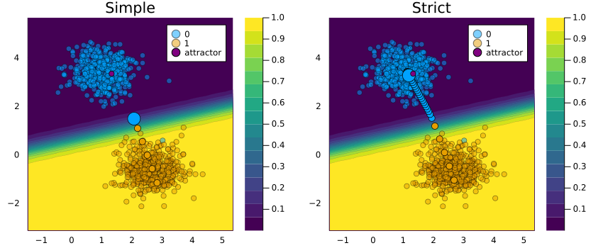
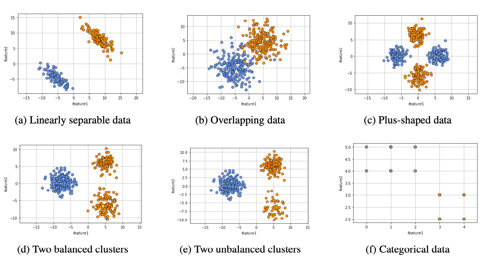

Endogenous Macrodynamics in Algorithmic Recourse
Existing work on Counterfactual Explanations (CE) and Algorithmic Recourse (AR) has largely been limited to the static setting: given some classifier we are interested in finding close, actionable, realistic, sparse, diverse and ideally causally founded counterfactuals. The ability of CE to handle dynamics like data and model drift remains a largely unexplored research challenge at this point. Only one recent work considers the implications of exogenous domain and model shifts. This project instead focuses on endogenous dynamics, that is shifts that occur when AR is actually implemented by a proportion of individuals. Early findings suggest that the involved shifts may be large with important implications on the validity of AR and the overall characteristics of the sample population.
1 Introduction
Recent advances in Artificial Intelligence (AI) have propelled its adoption in scientific domains outside of Computer Science including Healthcare, Bioinformatics, Genetics and the Social Sciences. While this has in many cases brought benefits in terms of efficiency, state-of-the-art models like Deep Neural Networks (DNN) have also given rise a new type of principal-agent problem in the context of data-driven decision-making. It involves a group of principals - i.e. human stakeholders - that fail to understand the behaviour of their agent - i.e. the model used for automated decision-making [1].
Models or algorithms that fall into this category are typically referred to black-box models. Despite their shortcomings, black-box models have grown in popularity in recent years and have at times created undesirable societal outcomes [2]. The scientific community has tackled this issue from two different angles: while some have appealed for a strict focus on inherently iterpretable models [3], others have investigated different ways to explain the behaviour of black-box models. These two sub-domains can be broadly referred to as interpretable AI and explainable AI (XAI), respectively.
Among the approaches to XAI that have recently grown in popularity are Counterfactual Explanations (CE). They explain how inputs into a model need to change for it to produce different outputs. Counterfactual Explanations that involve realistic and actionable changes can be used for the purpose of Algorithmic Recourse (AR) to help individuals who face adverse outcomes. An example relevant to the Social Sciences is consumer credit: in this context AR can be used to guide individuals in improving their creditworthiness, should they have previously been denied access to credit based on an automated decision-making system. A meaningful recourse recommendation for a denied applicant could be: “If your net savings rate had been 10% of your monthly income instead of the actual 8%, your application would have been successful. See if you can temporarily cut down on consumption.” In the remainder of this paper we will use both terminologies - recourse and counterfactual - interchangeably to refer to situations where counterfactuals are generated with the intent to provide individual recourse.
Existing work in this field has largely worked in a static setting: various approaches have been proposed to generate counterfactuals for a given individual that is subject to some pre-trained model. More recent work has compared different approaches within this static setting [4]. In this work we go one step further and ask ourselves: what happens if recourse is provided and implemented repeatedly? What types of dynamics are introduced and how do different counterfactual generators compare in this context?
Research on algorithmic recourse has also so far typically addressed the issue from the perspective of one single individual and has indeed been referred to as individual recourse in some places. Arguably though, most real-world applications that warrant algorithmic recourse involve potentially large groups of individuals typically competing for scarce resources. Our work demonstrates that in such scenarios, choices made by or for one single individual are likely to affect the broader collective of individuals in ways that current approaches to AR fail to account for. More specifically, we argue that a strict focus on minimizing the private costs faced by individuals may be too narrow an objective.
Figure 1 illustrates this idea for a binary problem involving a probabilistic classifier and the counterfactual generator proposed by [5]: the implementation of AR for a subset of individuals leads to a domain shift (b), which in turn triggers a model shift (c). As this game of implementing AR and updating the classifier is repeated, the decision boundary moves away from training samples that were originally in the target class (d). We refer to these types of dynamics as endogenous because they are induced by the implementation of recourse itself. The term macrodynamics is borrowed from the economics literature and used to describe processes involving whole groups or societies.

We think that these types of endogenous dynamics may be problematic and warrant our attention. Firstly, model shifts may inadvertently change classification outcomes for individuals who never received and implemented recourse. Secondly and relatedly, we observe in Figure 1 that as the decision boundary moves in the direction of the non-target class, counterfactual paths become shorter: in the consumer credit example, individuals that previously would have been denied credit based on their input features are suddenly considered as creditworthy. Average default risk across all borrowers can therefore be expected to increase. Conversely, lenders that anticipate such dynamics may choose to refrain from offering recourse (and hence credit) to more than just a tiny share of individuals. In that latter and perhaps more likely scenario, the probability of being offered recourse decreases with every individual that implements recourse: in other words, the actions of first-movers exert a negative externality on future would-be borrowers.
To the best of our knowledge this is the first work investigating endogenous macrodynamics in AR. Our contributions to the state of knowledge are as follows: firstly, we posit a compelling argument that calls for a novel perspective on algorithmic recourse extending our focus from single individuals to groups. Secondly, we introduce an experimental framework extending previous work by [6], which enables us to study macrodynamics of algorithmic recourse through simulations that can be fully parallelized. Thirdly, we use this framework to provide a first in-depth analysis of endogenous recourse dynamics induced by various popular counterfactual generators including [5], [7], [8], [9] and [10]. To this end we propose a number of novel evaluation metrics that can be used to quantify and benchmark the macrodynamics introduced by the different generators. Finally, we also discuss what drives endogenous dynamics and propose strategies to mitigate them.
The remainder of the paper is structured as follows: Section 2 places our work in the broader context of related literature. Section 3 presents our methodology and data. Section 5 presents our empirical findings which are then discussed in the broader context of the literature in Section 7. We also point to some of the limitations or our work as well as avenues for future research in Section 8. Finally, Section 9 concludes.
3 Gradient-Based Recourse Revisited
In the following we first set out a generalized framework for gradient-based counterfactual search in Section 3.1 to introduce the various counterfactual generators we have chosen to use in our experiments. We then describe the experimental setup in Section 4.1 and introduce several evaluation metrics used to benchmark the different generators.
3.1 From individual recourse …
In this work we have chosen to focus on a number of gradient-based counterfactual generators to investigate the endogenous dynamics we introduced in Section 1. Gradient-based counterfactual search is well-suited for differentiable black-box models like deep neural networks. We can restate Equation 2 in a more general form that encompasses most gradient-based approaches to counterfactual search:
\[ \begin{aligned} \mathbf{s}^\prime &= \arg \min_{\mathbf{s}^\prime \in \mathcal{S}} \left\{ \sum_{k=1}^{K} {\ell(M(f(s_k^\prime)),t)}+ \lambda {h(f(s_k^\prime)) } \right\} \end{aligned} \tag{3}\]
Here \(\mathbf{s}^\prime=\left\{s_k^\prime\right\}_K\) is the stacked \(K\)-dimensional array of counterfactual states and \(f: \mathcal{S} \mapsto \mathcal{X}\) maps from the counterfactual state space to the feature space.
3.2 … towards collective recourse
To explicitly address the notion that individual recourse may affect the outcome and prospect of other individuals, we propose to extend Equation 3 as follows:
\[ \begin{aligned} \mathbf{s}^\prime &= \arg \min_{\mathbf{s}^\prime \in \mathcal{S}} \sum_{k=1}^{K} {\ell(M(f(s_k^\prime)),t)} \\ &+ \lambda_1 {h(f(s_k^\prime)) } + \lambda_2 {g(f(s_k^\prime))} \end{aligned} \tag{4}\]
Here \(h(f(s_k^\prime))\) denotes the proxy for private costs faced by the individual as before and \(\lambda_1\) governs to what extent that private cost ought to be penalised. The newly introduced term \(g(f(s_k^\prime))\) is meant to capture and address social costs incurred by the collective of individuals in response to changes in \(\mathbf{s}^\prime\). The trade-off between private and social costs is determined by the ratio between \(\lambda_1\) and \(\lambda_2\). As with individual recourse, the exact choice of \(g(\cdot)\) is not obvious, nor do we intend to provide a definite answer in this work, if such even exists. A straight-forward choice simply extends the baseline approach by [5]: instead of only penalizing the distance of the individuals’ counterfactual to its factual, we propose penalizing its distance to some sensible point in the target domain, for example the sample average: \(\bar{\mathbf{x}}\). For such a recourse objective, higher choices of \(\lambda_2\) relative to \(\lambda_1\) will lead counterfactuals to gravitate towards the specified point in the target domain. In the remainder of this paper we will therefore refer to this approach as Gravitational generator, when we investigate its potential usefulness for mitigating endongenous macrodynamics1.
3.3 A note on convergence
For this simple mitigating strategy underlying the Gravitational generator to work as expected, one needs to ensure that counterfactual search continues, even after a predetermined threshold probability \(\gamma\) has potentially already been reached. Figure 2 illustrates this distinction: if one chooses to terminate search once the desired threshold is reached (left panel) the gravitational pull towards \(\bar{\mathbf{x}}\) is never actually satisfied (compare to right panel). More generally, if convergence is defined simply in terms of flipping the predicted label with some desired degree of confidence, this corresponds to essentially ignoring any parts of the counterfactual search objective that do not involve \(\ell(M(f(s_k^\prime)),t)\) beyond that point. While this may be appropriate for some applications, in general this seems like an odd convention. Since we nonetheless seen convergence specified simply in terms of reaching the threshold probability in some places2, we thought it worth making this distinction explicit.

4 Modeling Endogenous Macrodynamics in Algorithmic Recourse
In this …
4.1 Simulations
The dynamics illustrated in Figure 1 in Section 1 were generated through a simple experiment that aims to simulate the process of algorithmic recourse in practice. We begin in the static setting at time time \(t=0\): given some pre-trained classifier \(M\) we generate recourse for a random batch of \(B\) individuals in the non-target class. Note that we focus our attention on classification problems, since classification poses the most common practical use-case for algorithmic recourse. In order to simulate the dynamical process we suppose that the model \(M\) is retrained following the actual implementation of recourse in time \(t=0\). Following the update to the model, we assume that at time \(t=1\) recourse is generated for yet another random subset of individuals in the non-target class. This process is repeated for a number of time periods \(T\). To get a clean read on endogenous dynamics we keep the total population of samples closed: we allow existing samples to move from factual to counterfactual states, but do not allow any entirely new samples to enter the population. The experimental setup is summarized in Algorithm \(\ref{algo-experiment}\)
A noteworthy practical consideration is the choice of \(T\) and \(B\). The higher these values, the more factual instances undergo recourse throughout the entire experiment. Of course, this is likely to lead to more pronounced domain and model shifts by time \(T\). At the same time, it is generally improbable that a very large part of the population would request an explanation of the algorithm’s decisions. In our experiments, we choose the values such that \(T \cdot B\) corresponds to the application of recourse on \(25-50\%\) of the negative instances from the initial dataset. As we collect data at each time \(t\), we can also verify the impact of recourse when it is implemented for a smaller number of individuals. Using our framework the experiment can be conducted on an arbitrary number of algorithmic recourse generators. As all generators make use of the same initial model and initial dataset, the differences in domain and model shifts observed throughout the rounds depend solely on the employed generator.
4.2 Evaluation Metrics
We formulate two desiderata for the set of metrics used to measure domain and model shifts induced by recourse. First, the metrics should be applicable regardless of the dataset or classification technique so that they allow for the meaningful comparison of the generators in various scenarios. As the knowledge of the underlying probability distribution is rarely available, the metrics should be empirical and non-parametric. This further ensures that we can also measure large datasets by sampling from the available data. Moreover, while our study was conducted in a two-class classification setting, our choice of metrics should remain applicable in the future research on multi- class recourse problems. Second, the set of metrics should allow to capture various aspects of the previously mentioned magnitude, path, and tempo of changes while remaining as small as possible.
4.2.1 Domain Shifts
To quantify the magnitude of domain shifts we rely on an unbiased estimate of the squared population Maximum Mean Discrepancy (MMD) given as:
\[ \begin{aligned} MMD^2_u[F,{X}^\prime,\tilde{X}^\prime] &= \frac{1}{m(m-1)}\sum_{i=1}^m\sum_{j\neq i}^m k(x_i,x_j) \\ &+ \frac{1}{n(n-1)}\sum_{i=1}^n\sum_{j\neq i}^n k(\tilde{x}_i,\tilde{x}_j) \\ &- \frac{2}{mn}\sum_{i=1}^m\sum_{j=1}^n k(x_i,\tilde{x}_j) \end{aligned} \tag{5}\]
where \(\mathcal{F}\) is a unit ball in a Reproducing Kernel Hilbert Space H [27], and \(X\), \(\tilde{X}\) represent independent and identically distributed samples drawn from probability distributions \(p\) and \(q\) respectively [28]. MMD is a measure of the distance between the kernel mean embeddings of \(p\) and \(q\) in RKHS \(\mathcal{H}\). An important consideration is the choice of the kernel function \(k(\cdot,\cdot)\). In our implementation we make use of the radial basis function (RBF) kernel with a constant length-scale parameter of \(0.5\). As RBF captures all moments of distributions \(p\) and \(q\), we have that \(MMD_u^2[F,X,\tilde{X}]=0\) if and only if \(X=\tilde{X}\).
The evaluation metric in Equation 5 is computed after every round \(t=1,...,T\) of the experiment. To assess the statistical significance of the observed shifts under the null hypothesis that samples \(X\) and \(\tilde{X}\) were drawn from the same probability distribution we follow [24]. To that end, we combine the two samples and generate a large number of permutations of \(X + \tilde{X}\). Then, we split the permuted data into two new samples \(X^\prime\) and \(\tilde{X}^\prime\) having the same size as the original samples. Then under the null hypothesis we should have that \(MMD_u^2[F,X^\prime,\tilde{X}^\prime]\) be approximately equal to \(MMD_u^2[F,X,\tilde{X}]\). The corresponding \(p\)-value can then be calculated by counting how these two quantities are not equal.
We calculate the MMD for both classes individually based on the ground truth labels, i.e. the labels that samples were assigned in time \(t=0\). Throughout our experiments we generally do not expect the distribution of the negative class to change over time – application of recourse reduces the size of this class, but since individuals are sampled uniformly the distribution should remain unaffected. Conversely, unless a recourse generator can perfectly replicate the original probability distribution, we expect the MMD of the positive class to increase. Thus, when discussing MMD, we generally mean the shift in the distribution of the positive class.
Finally, feature mean and feature standard deviation are also calculated to verify how the implementation of recourse impacts every attribute in the dataset. Although MMD already captures information about the expected value and variance, we may also be interested in a more granular look at individual features.
4.2.2 Model Shifts
As our baseline for quantifying model shifts we measure perturbations to the model parameters at each point in time \(t\) following [15]. We define \(\Delta=||\theta_{t+1}-\theta_{t}||^2\), that is the euclidean distance between the vectors of parameters before and after retraining the model \(M\). We shall refer to this baseline metric simply as Perturbations.
We extend the metric in Equation 5 for the purpose of quantifying model shifts. Specifically, we introduce Predicted Probability MMD (PP MMD): instead of applying Equation 5 to features directly, we apply it to the predicted probabilities assigned to a set of samples by the model \(M\). If the model shifts, the probabilities assigned to each sample will change; again, this metric will equal 0 only if the two classifiers are the same. It is worth noting that while we apply the technique to samples drawn uniformly from the dataset, it can also be employed on arbitrary points in the entire feature space (or a subspace). The latter approach is theoretically more robust. Unfortunately, in practice this approachs suffers from the curse of dimensionality, since it becomes increasingly difficult to select enough points to overcome noise as the dimension \(D\) grows.
As an alternative to PP MMD we use a pseudo-distance for the Disagreement Coefficient (Disagreement). This metric was introduced in [25] and estimates \(p(M(x) \neq M^\prime(x))\), that is the probability that two classifiers do not agree on the predicted outcome for a randomly chosen sample. Thus, it is not relevant whether the classification is correct according to the ground truth, but only whether the sample lies on the same side of the two respective decision boundaries. In our context, this metric quantifies the overlap between the initial model (trained before the application of recourse) and the updated model. A Disagreement Coefficient unequal to zero is indicative of a model shift. The opposite is not true: even if the Disagreement Coefficient is equal to zero a model shift may still have occured. This is one reason for why PP MMD is our our preferred metric.
Finally, we introduce Decisiveness as a metric that quantifies the likelihood that a model assigns a high probability to its classification of any given sample. We define the metric simply as \({1\over{N}}\sum_{i=0}^N(\sigma(M(x)) − 0.5)^2\) where \(M(x)\) are predicted logits from a binary classifier and \(\sigma\) denotes the sigmoid function. This metric provides an unbiased estimate of the binary classifier’s tendency to produce high-confidence predictions in either one of the two classes. Although the exact values for this metric are not important for our study, they can be used to detect model shifts. If decisiveness changes over time, then this is indicative of the decision boundary moves towards either one of the two classes.
5 Experiment Setup
5.1 Recourse Generators
In the case of the baseline counterfactual generator [5] \(f\) is just the idendity function and the number of counterfactuals \(K\) is equal to one. This generator, which we shall refer to as Wachter in the following, shall serve as the baseline against which all other gradient-based methodologies will be compared. In particular, we include include the following generator in our benchmarking exercises: REVISE [8], CLUE [10], DICE [9] and a greedy approach that relies on probabilistic models [7].
Both REVISE and CLUE search counterfactuals in some latent embedding \(S \subset \mathcal{S}\) instead of the feature space directly. The latent embedding is learned by a separate generative model that is tasked with learning the data generating process (DGP) of \(X\). In this case \(f\) in Equation 3 corresponds to the decoder part of the generative model, in other words the deterministic function that maps back from the latent embedding to the feature space. Provided the generative model is well-specified, traversing the latent embedding typically results in realistic and plausible counterfactuals, because they are implicitly generated by the (learned) DGP [8]. CLUE distinguishes itself from REVISE and other counterfactual generators in that it aims to minimize the predictive uncertainty of the model in question \(M\). To quantify predictive uncertainty the authors rely on entropy estimates for probabilistic models. The Greedy approach proposed by [7] also works with the subclass of models \(\tilde{\mathcal{M}}\subset\mathcal{M}\) that can produce predictive uncertainty estimates. The authors show that in this setting the complexity penalty \(h(\cdot)\) in Equation 3 is redundant and meaningful counterfactuals can be generated in a fast and efficient manner through a modified Jacobian-based Saliency Map Attack (JSMA). Finally, DICE distinguishes itself from all other generators considered here in that it aims to generate a diverse set of \(K>1\) counterfactuals. To this end the authors use a complexity penalty \(h(\mathbf{s}^\prime)\) that favours diverse outcomes, in the sense that \(s_1, ... , s_K\) look as different from each other as possible.
Our motivation for including these different generators in our analysis, is that they all offer slightly different approaches to generate meaningful counterfactuals for differentiable black-box models. We hypothesize that generating more meaningful counterfactuals should mitigate the endogenous dynamics illustrated in Figure 1 in Section 1. This intuition stems from the underlying idea that more meaningful counterfactuals are generated by the same or at least a very similar data generating process as the training data. All else equal, counterfactuals that fulfill this basic requirement should be less prone to trigger domain and model shifts.
5.2 Data
We have chosen to work with both synthetic and real-world datasets. Using synthetic data allows us to impose distributional properties that may affect the resulting recourse dynamics. Following [15] we generate synthetic data in \(\mathbb{R}^2\) to also allow for a visual interpretation of the results. Real-world data is used in order to assess if endogenous dynamics also occur in higher-dimensional settings.
5.2.1 Synthetic data
We use four synthetic binary classification datasets consisting of 1000 samples each.3 The datasets are presented in Figure 3 (see also Appendix A for a formal description). Samples from the negative class are marked in blue while samples of the positive class are marked in orange.

Ex-ante we expect to see that Wachter will create a new cluster of counterfactual instances in the proximity of the initial decision boundary. Thus, the choice of a black-box model may have an impact on the paths of the recourse. For generators that use latent space search ([8], [10]) or rely on (and have access to) probabilistic models ([10], [7]) we expect that counterfactuals will end up in regions of the target domain that are densely populated by training samples. Finally, we expect to see the counterfactuals generated by DiCE to be uniformly spread around the feature space inside the target class.
5.2.2 Real-world data
Additionally, we use two real-world datasets from the Finance domain. Firstly, we use the Give Me Some Credit dataset which was open-sourced on Kaggle for the task to predict whether a borrower is likely to experience financial difficulties in the next two years [26]. Originally consisting of 250,000 instances with 11 numerical attributes, the dataset was randomly undersampled to result in a balanced subsample made up of 3000 individuals. Secondly, we the German Credit dataset which involves the task of predicting if bank customers are credit-worthy or not [27]. It consists of 700 positive and 300 negative instances charaterized by 7 numerical and 13 categorical attributes. We process the dataset in two ways: (1) the values of the “Personal status and sex” feature are aggregated by the two represented genders; (2) the most common values are calculated for all categorical features such that a feature \(x_d\) with the mode \(\bar{x}_d\) is transformed into a new binary feature \(\tilde{x}_d=\mathbb{I}_{x_{d,i}>=\bar{x}_d}\). Binarization ensures that we can use all counterfactual generators in the benchmark.
6 Experiments
6.1 Endogenous Macrodynamics
6.2 Potential Mitigation Strategies
7 Discussion
- Shift of focus from individual to group of individuals (related: https://www.researchgate.net/publication/353073138_Generating_Collective_Counterfactual_Explanations_in_Score-Based_Classification_via_Mathematical_Optimization)
- Convergence criterium matters: terminating once threshold probability is reached may not be optimal (see e.g. REVISE)
- Optimizer choice matters: dimensionality is typically low, so no obvious benefit to using ADAM.
- This might be better placed in JuliaCon proceedings, perhaps backed by small blog post on the matter.
- Mitigating strategy: penaliye distance from centroid.
8 Limitations and Future Work
While we believe that this work constitutes a valuable starting point for addressing existing issues in algorithmic recourse from a fresh perspective, we are aware of several of its limitations. In the following we highlight some of these limitations and point to avenues for future research.
8.1 Experimental Setup
The experimental setup proposed here is designed to mimic a real-world recourse process in a simple fashion. In practice, models are in fact updated on a regular basis [15]. We also find it plausible to assume that the implementation of recourse happens periodically for different individuals, rather that all at once at time \(t=0\). That being said, our experimental design is a vast over-simplification of potential real-world scenarios. In practice, any endogenous shifts that may occur can be expected to be entangled with exogenous shifts of the nature investigated in [15]. We also make implicit assumptions about the utility functions of the involved agents that may well be too simple: individuals seeking recourse are assumed to always implement the proposed counterfactual explanations; conversely, the agent in charge of the model \(M\) is assumed to always treat individuals that have implemented valid recourse as if they were truly now in the target class. Relating this back to the consumer credit example, we assume that the would-be borrowers are always willing and able to implement recourse and the bank is always willing to provide credit as would-be borrowers move across the decision boundary. In practice it is doubtful that agents behave according to such simple rules. Nonetheless, we think that our simple framework offers a starting point for future work on recourse dynamics (both endogenous and exogenous dynamics).
8.2 Data
Largely in line with the existing literature on algorithmic recourse, we have limited our analysis of real-world data to three commonly used benchmark datasets that involve binary prediction tasks. Future work may benefit from including novel datasets or extending the analysis to multi-class or regression problems, the latter arguably representing the most common objective in Finance and Economics. It is also worth mentioning that the use of real-world datasets considered in this work is constrained by the fact that at the time of writing CounterfactualExplanations.jl only supports continuous features, at least of some of the counterfactual generators considered here. The fact that we therefore had to discard discrete features led to relatively poor initial performance of our classifiers in some cases. While this is indeed a limitation we intend to address in future and derivative work, our findings with respect to endogenous macrodynamics do not hinge on strong classifier performance.
8.3 Classifiers
For reasons stated earlier we have limited our analysis to differentiable linear and non-linear classifiers, in particular logistic regression and deep neural networks. While these sorts of classifiers have also typically been analyzed in the existing literature on counterfactual explanations and algorithmic recourse, they represent only a subset of popular machine learning models employed in practice - both black-box and glass-box. Despite the success and popularity of deep learning in the context of high-dimensional data such as image, audio and video, empirical evidence suggests that other models such as boosted decision trees may have an edge when it comes to lower-dimensional tabular datasets, such as the ones considered here [29].
9 Concluding Remarks
Acknowledgment
P. A. thanks …
References
10 Tables
…
11 Figures
…
12 Code
…
Footnotes
Note that despite the naming convention our goal here is not to provide yet another counterfactual generator, but merely investigate the most simple penalty we can think of with respect to its effectiveness.↩︎
[8] define convergence of Algorithm 1 in this way. The implementation of [5] in CARLA is also defined in this way.↩︎
To see how the data is generated see here: https://github.com/pat-alt/AlgorithmicRecourseDynamics.jl/blob/main/notebooks/synthetic_datasets.ipynb↩︎